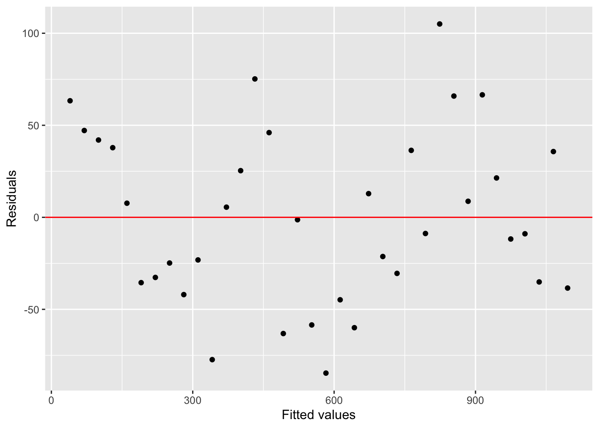

Our dataset in this lab studies baby names in California. The loaded
dataset, kellys, has information about how many babies were
given the name “Kelly” in California from 1940-2016.
Take a look at the dataset, and familiarize yourself with the variables.
Let’s take a look at how the name “Kelly” has changed over time, for female-assigned babies only.
Use the following code to plot the counts of babies named Kelly (in
California) for each year. Notice the new addition to
ggplot() of + geom_point()
Think about it: Why did the name “Kelly” suddenly become popular for female babies around 1960? I have heard a few theories… can you find me an interesting one?
It appears that the name “Kelly” is getting steadily less popular since 1980. However, we would like to know if this trend is significant. First, let’s adjust our dataset to narrow it down to only female babies and only 1980 and beyond.
kellys_80 <- kellys %>% filter(Gender == "F", Year > 1980)Use the code below to run a linear regression on the
counts of Kellys over time. For this, we use the R
command lm(), which stands for “linear model”.
The last thing we need to do is make sure the linear regression is a good choice, rather than some other shape of line. Use the code below to plot the regression line.
The “residual” of an observation is how far away the prediction on the regression line is from what we actually saw. We hope that there is no clear pattern in the residuals; i.e., that any “wrong” prediction is due purely to chance.
Here is a plot of the residuals.
ggplot(my_lm) +
geom_point(aes(x=.fitted, y=.resid)) +
xlab("Fitted values") + ylab("Residuals") +
geom_hline(yintercept = 0, col = "red")